Remap AVISO to tx2_3#
%matplotlib inline
import xarray as xr
import xesmf
import numpy as np
import datetime
import matplotlib.pyplot as plt
import warnings
# Suppress RuntimeWarnings globally
warnings.filterwarnings("ignore", category=RuntimeWarning)
today = datetime.date.today().strftime("%y%m%d")
print(today)
260306
def weighted_temporal_mean(ds, var):
"""
weight by days in each month
"""
# Determine the month length
month_length = ds.time.dt.days_in_month
# Calculate the weights
wgts = month_length.groupby("time.year") / month_length.groupby("time.year").sum()
# Make sure the weights in each year add up to 1
np.testing.assert_allclose(wgts.groupby("time.year").sum(xr.ALL_DIMS), 1.0)
# Subset our dataset for our variable
obs = ds[var]
# Setup our masking for nan values
cond = obs.isnull()
ones = xr.where(cond, 0.0, 1.0)
# Calculate the numerator
obs_sum = (obs * wgts).resample(time="YS").sum(dim="time")
# Calculate the denominator
ones_out = (ones * wgts).resample(time="YS").sum(dim="time")
# Return the weighted average
return obs_sum / ones_out
fname = '../mesh/tx2_3v3_grid.nc'
ds_out = xr.open_dataset(fname).rename({'tlon': 'lon','tlat': 'lat', 'qlon': 'lon_b',
'qlat': 'lat_b', 'nx' : 'xh', 'ny' : 'yh',
'depth' : 'z_l', 'tmask':'mask'})
ds_out
<xarray.Dataset> Size: 42MB
Dimensions: (yh: 480, xh: 540, nxp: 541, nyp: 481)
Dimensions without coordinates: yh, xh, nxp, nyp
Data variables: (12/20)
lon (yh, xh) float64 2MB ...
lat (yh, xh) float64 2MB ...
ulon (yh, nxp) float64 2MB ...
ulat (yh, nxp) float64 2MB ...
vlon (nyp, xh) float64 2MB ...
vlat (nyp, xh) float64 2MB ...
... ...
tarea (yh, xh) float64 2MB ...
mask (yh, xh) float64 2MB ...
angle (yh, xh) float64 2MB ...
z_l (yh, xh) float64 2MB ...
ar (yh, xh) float64 2MB ...
egs (yh, xh) float64 2MB ...
Attributes:
Description: CESM MOM6 2/3 degree grid
Author: Frank, Fred, Gustavo (gmarques@ucar.edu)
Created: 2026-03-05T14:49:28.971877
type: Glogal 2/3 degree grid filedef regrid_tracer(fld, ds_in, ds_out, method='bilinear'):
regrid = xesmf.Regridder(
ds_in,
ds_out,
method=method,
periodic=True,
)
fld_out = regrid(ds_in[fld])#[0,0,:]#.where(ds_in.lat>ds_out.geolat.min())
return fld_out
Averaged Sea Level Anomalies#
infile = '/glade/campaign/cgd/oce/datasets/obs/aviso/mean_sea_level_anomaly/dt_global_allsat_msla_h_y*nc'
ds_in = xr.open_mfdataset(infile)
ds_in
/glade/derecho/scratch/gmarques/tmp/ipykernel_48164/16146052.py:2: FutureWarning: In a future version of xarray the default value for data_vars will change from data_vars='all' to data_vars=None. This is likely to lead to different results when multiple datasets have matching variables with overlapping values. To opt in to new defaults and get rid of these warnings now use `set_options(use_new_combine_kwarg_defaults=True) or set data_vars explicitly.
ds_in = xr.open_mfdataset(infile)
<xarray.Dataset> Size: 3GB
Dimensions: (time: 312, nv: 2, lat: 720, lon: 1440)
Coordinates:
* time (time) datetime64[ns] 2kB 1993-01-15 ... 2018-12-15
* nv (nv) int32 8B 0 1
* lat (lat) float32 3kB -89.88 -89.62 -89.38 ... 89.62 89.88
* lon (lon) float32 6kB 0.125 0.375 0.625 ... 359.4 359.6 359.9
Data variables:
climatology_bnds (time, nv) datetime64[ns] 5kB dask.array<chunksize=(1, 2), meta=np.ndarray>
lat_bnds (time, lat, nv) float32 2MB dask.array<chunksize=(1, 720, 2), meta=np.ndarray>
lon_bnds (time, lon, nv) float32 4MB dask.array<chunksize=(1, 1440, 2), meta=np.ndarray>
crs (time) int32 1kB -2147483647 -2147483647 ... -2147483647
sla (time, lat, lon) float64 3GB dask.array<chunksize=(1, 720, 1440), meta=np.ndarray>
Attributes: (12/39)
cdm_data_type: Grid
comment: Monthly Mean of Sea Level Anomalies refe...
date_issued: 2018-02-13 16:54:24Z
time_coverage_resolution: P1M
creator_email: aviso@altimetry.fr
product_version: 5.10
... ...
geospatial_vertical_min: 0.0
geospatial_vertical_max: 0.0
geospatial_lat_units: degrees_north
geospatial_lon_units: degrees_east
geospatial_lat_resolution: 0.25
geospatial_lon_resolution: 0.25sla = regrid_tracer('sla', ds_in, ds_out).rename('sla')
sla
<xarray.DataArray 'sla' (time: 312, yh: 480, xh: 540)> Size: 647MB
dask.array<sum-aggregate, shape=(312, 480, 540), dtype=float64, chunksize=(1, 480, 540), chunktype=numpy.ndarray>
Coordinates:
* time (time) datetime64[ns] 2kB 1993-01-15 1993-02-15 ... 2018-12-15
Dimensions without coordinates: yh, xh
Attributes:
regrid_method: bilinear# add coordinates
sla = sla.assign_coords(geolat=ds_out.lat, geolon=ds_out.lon)
sla
<xarray.DataArray 'sla' (time: 312, yh: 480, xh: 540)> Size: 647MB
dask.array<sum-aggregate, shape=(312, 480, 540), dtype=float64, chunksize=(1, 480, 540), chunktype=numpy.ndarray>
Coordinates:
* time (time) datetime64[ns] 2kB 1993-01-15 1993-02-15 ... 2018-12-15
geolat (yh, xh) float64 2MB -81.56 -81.56 -81.56 ... 50.27 50.11 49.99
geolon (yh, xh) float64 2MB -286.7 -286.0 -285.3 ... 72.97 72.98 73.0
Dimensions without coordinates: yh, xh
Attributes:
regrid_method: bilinearVisual inspection#
Make sure original and remapped plots look similar.
# visual inspection. Make sure original and remapped plots look similar
for t in range(12):
fig, axes = plt.subplots(nrows=1, ncols=2, figsize=(18,4))
sla[t,:,:].plot.pcolormesh(x='geolon',y='geolat',ax=axes[0], vmin=-1,vmax=1, cmap='bwr')
ds_in['sla'][t,:,:].plot.pcolormesh(ax=axes[1], vmin=-1,vmax=1, cmap='bwr')
axes[0].set_title('Remapped')
axes[1].set_title('Original grid')
plt.suptitle('Month ='+ str(t+1))
/glade/u/apps/opt/miniforge/envs/npl-2026a/lib/python3.13/site-packages/dask/config.py:786: FutureWarning: Dask configuration key 'allowed-failures' has been deprecated; please use 'distributed.scheduler.allowed-failures' instead
warnings.warn(
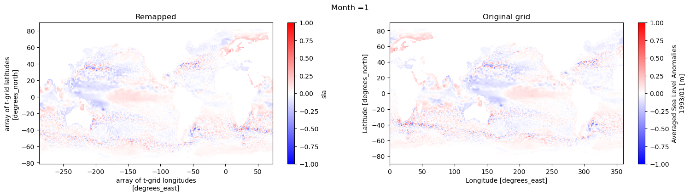
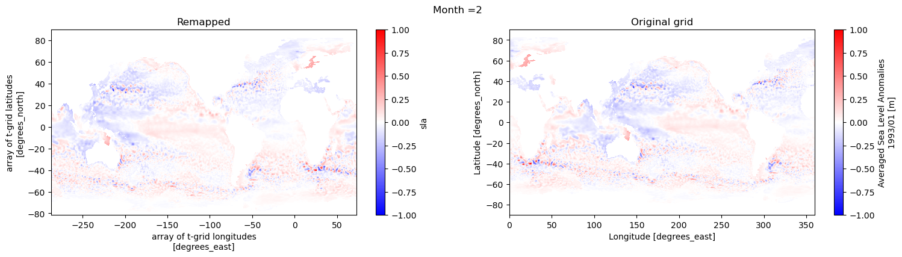
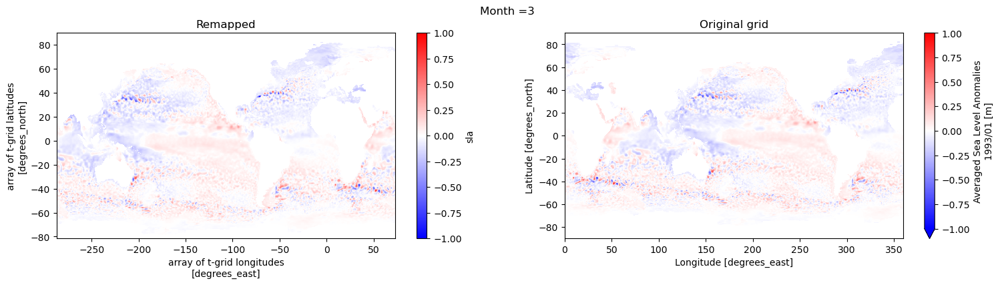
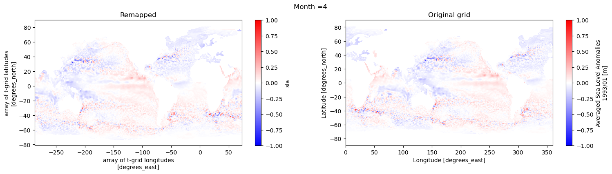
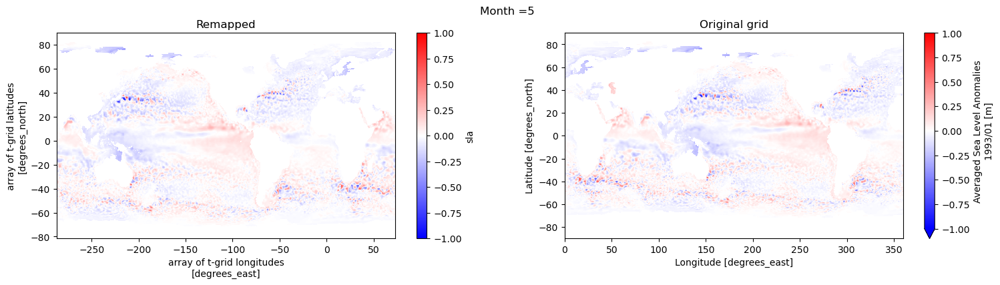
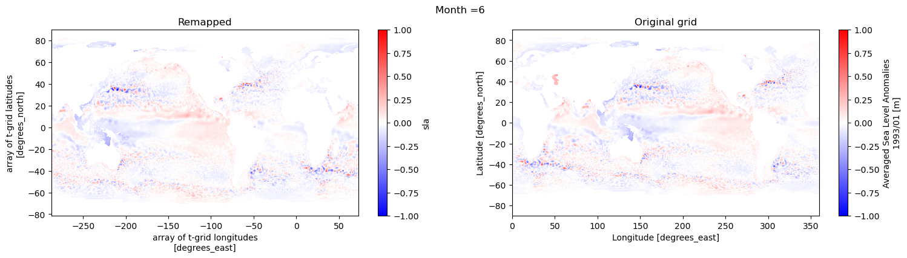
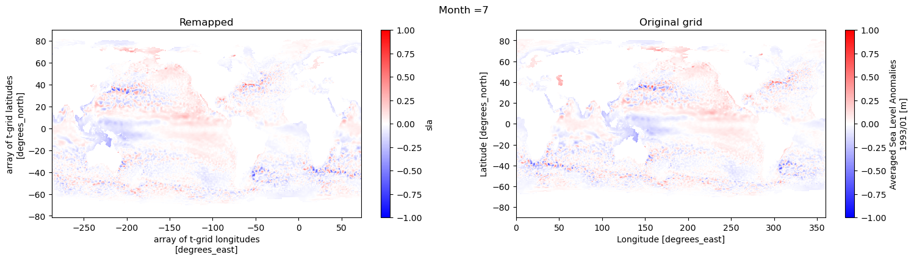
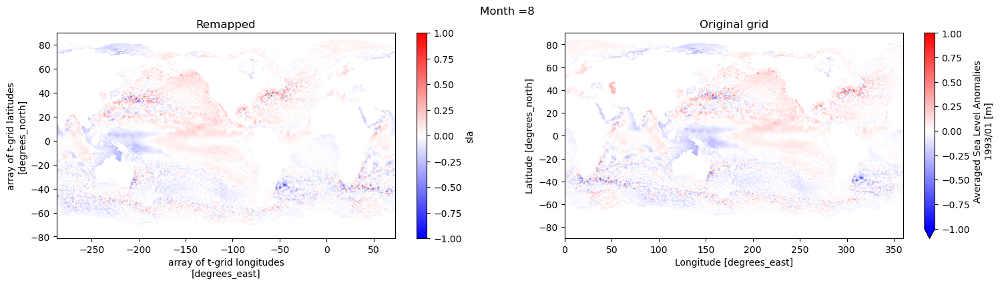
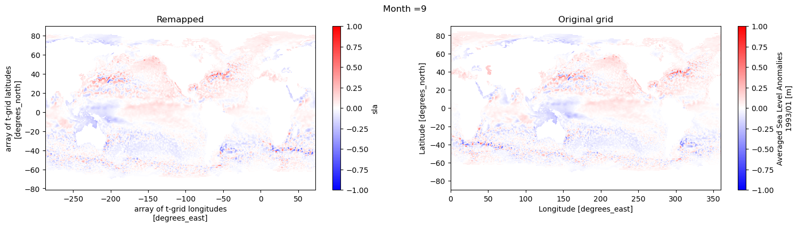
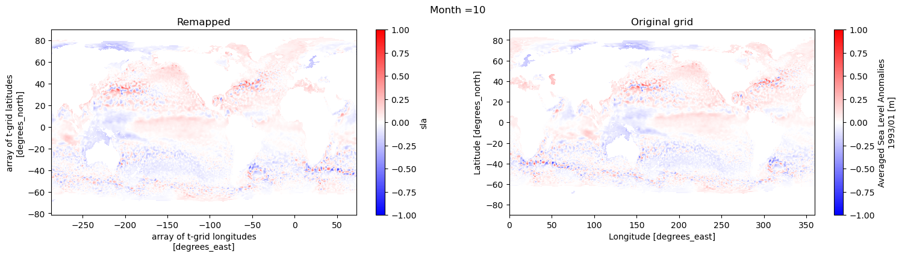
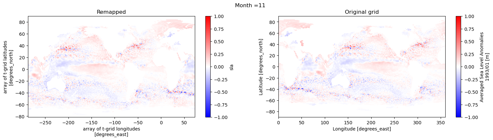
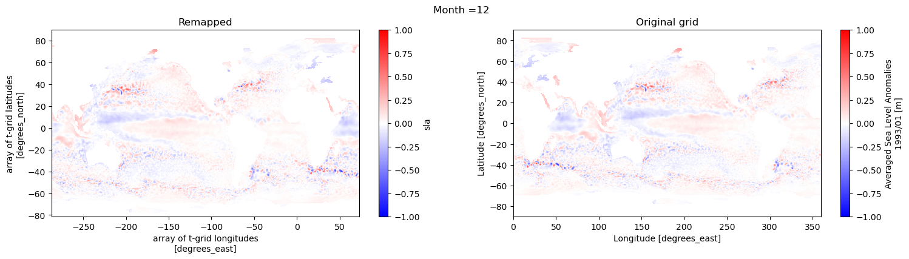
# Global attrs
sla.attrs['title'] = 'Averaged Sea Level Anomalies remapped to tx2_3'
sla.attrs['comment'] = 'Monthly Mean of Sea Level Anomalies referenced to the [1993, 2012] period'
sla.attrs['references'] = 'http://www.aviso.altimetry.fr'
sla.attrs['author'] = 'Gustavo Marques (gmarques@ucar.edu)'
sla.attrs['date'] = today
sla.attrs['infile'] = infile
sla.attrs['url'] = 'https://github.com/NCAR/tx2_3/aviso'
# save
fname = 'aviso_msla_to_tx2_3v3_{}.nc'.format(today)
sla.to_netcdf(fname)
Absolute Dynamic Topography#
infile = '/glade/campaign/cgd/oce/datasets/obs/aviso/mean_sea_level/monthly/*nc'
ds_in = xr.open_mfdataset(infile)
ds_in
/glade/derecho/scratch/gmarques/tmp/ipykernel_48164/2040787700.py:2: FutureWarning: In a future version of xarray the default value for data_vars will change from data_vars='all' to data_vars=None. This is likely to lead to different results when multiple datasets have matching variables with overlapping values. To opt in to new defaults and get rid of these warnings now use `set_options(use_new_combine_kwarg_defaults=True) or set data_vars explicitly.
ds_in = xr.open_mfdataset(infile)
<xarray.Dataset> Size: 6GB
Dimensions: (time: 96, latitude: 720, longitude: 1440, nv: 2)
Coordinates:
* time (time) datetime64[ns] 768B 1993-01-16 ... 2000-12-16
* latitude (latitude) float32 3kB -89.88 -89.62 -89.38 ... 89.38 89.62 89.88
* longitude (longitude) float32 6kB 0.125 0.375 0.625 ... 359.4 359.6 359.9
* nv (nv) int32 8B 0 1
Data variables:
adt (time, latitude, longitude) float64 796MB dask.array<chunksize=(1, 50, 50), meta=np.ndarray>
crs (time) int32 384B -2147483647 -2147483647 ... -2147483647
err (time, latitude, longitude) float64 796MB dask.array<chunksize=(1, 50, 50), meta=np.ndarray>
lat_bnds (time, latitude, nv) float32 553kB dask.array<chunksize=(1, 50, 2), meta=np.ndarray>
lon_bnds (time, longitude, nv) float32 1MB dask.array<chunksize=(1, 50, 2), meta=np.ndarray>
sla (time, latitude, longitude) float64 796MB dask.array<chunksize=(1, 50, 50), meta=np.ndarray>
ugos (time, latitude, longitude) float64 796MB dask.array<chunksize=(1, 50, 50), meta=np.ndarray>
ugosa (time, latitude, longitude) float64 796MB dask.array<chunksize=(1, 50, 50), meta=np.ndarray>
vgos (time, latitude, longitude) float64 796MB dask.array<chunksize=(1, 50, 50), meta=np.ndarray>
vgosa (time, latitude, longitude) float64 796MB dask.array<chunksize=(1, 50, 50), meta=np.ndarray>
Attributes: (12/45)
Conventions: CF-1.6
Metadata_Conventions: Unidata Dataset Discovery v1.0
cdm_data_type: Grid
comment: Sea Surface Height measured by Altimetry...
contact: servicedesk.cmems@mercator-ocean.eu
creator_email: servicedesk.cmems@mercator-ocean.eu
... ...
time_coverage_duration: P1D
time_coverage_end: 1993-01-01T00:00:00Z
time_coverage_resolution: P1D
time_coverage_start: 1993-01-01T00:00:00Z
title: DT merged all satellites Global Ocean Gr...
NCO: netCDF Operators version 5.1.4 (Homepage...ds_ann = weighted_temporal_mean(ds_in, 'adt')
ds_ann
<xarray.DataArray (time: 8, latitude: 720, longitude: 1440)> Size: 66MB
dask.array<truediv, shape=(8, 720, 1440), dtype=float64, chunksize=(1, 50, 50), chunktype=numpy.ndarray>
Coordinates:
* time (time) datetime64[ns] 64B 1993-01-01 1994-01-01 ... 2000-01-01
* latitude (latitude) float32 3kB -89.88 -89.62 -89.38 ... 89.38 89.62 89.88
* longitude (longitude) float32 6kB 0.125 0.375 0.625 ... 359.4 359.6 359.9
Attributes:
comment: The absolute dynamic topography is the sea surface height...
grid_mapping: crs
units: m
cell_methods: time: mean
axis: T
long_name: Time
standard_name: timeds_mean = ds_ann.mean('time').compute()
ds_mean
<xarray.DataArray (latitude: 720, longitude: 1440)> Size: 8MB
array([[nan, nan, nan, ..., nan, nan, nan],
[nan, nan, nan, ..., nan, nan, nan],
[nan, nan, nan, ..., nan, nan, nan],
...,
[nan, nan, nan, ..., nan, nan, nan],
[nan, nan, nan, ..., nan, nan, nan],
[nan, nan, nan, ..., nan, nan, nan]], shape=(720, 1440))
Coordinates:
* latitude (latitude) float32 3kB -89.88 -89.62 -89.38 ... 89.38 89.62 89.88
* longitude (longitude) float32 6kB 0.125 0.375 0.625 ... 359.4 359.6 359.9
Attributes:
comment: The absolute dynamic topography is the sea surface height...
grid_mapping: crs
units: m
cell_methods: time: mean
axis: T
long_name: Time
standard_name: timedef regrid_ssh(ds_in, ds_out, method='bilinear'):
regrid = xesmf.Regridder(
ds_in,
ds_out,
method=method,
# filename="weights.nc",
# reuse_weights=True,
periodic=True,
)
fld_out = regrid(ds_in)
return fld_out
adt = regrid_ssh(ds_mean, ds_out).rename('adt')
adt
<xarray.DataArray 'adt' (yh: 480, xh: 540)> Size: 2MB
array([[nan, nan, nan, ..., nan, nan, nan],
[nan, nan, nan, ..., nan, nan, nan],
[nan, nan, nan, ..., nan, nan, nan],
...,
[nan, nan, nan, ..., nan, nan, nan],
[nan, nan, nan, ..., nan, nan, nan],
[nan, nan, nan, ..., nan, nan, nan]], shape=(480, 540))
Dimensions without coordinates: yh, xh
Attributes:
regrid_method: bilinear# add coordinates
adt = adt.assign_coords(geolat=ds_out.lat, geolon=ds_out.lon)
adt
<xarray.DataArray 'adt' (yh: 480, xh: 540)> Size: 2MB
array([[nan, nan, nan, ..., nan, nan, nan],
[nan, nan, nan, ..., nan, nan, nan],
[nan, nan, nan, ..., nan, nan, nan],
...,
[nan, nan, nan, ..., nan, nan, nan],
[nan, nan, nan, ..., nan, nan, nan],
[nan, nan, nan, ..., nan, nan, nan]], shape=(480, 540))
Coordinates:
geolat (yh, xh) float64 2MB -81.56 -81.56 -81.56 ... 50.27 50.11 49.99
geolon (yh, xh) float64 2MB -286.7 -286.0 -285.3 ... 72.97 72.98 73.0
Dimensions without coordinates: yh, xh
Attributes:
regrid_method: bilinear# visual inspection. Make sure original and remapped plots look similar
fig, ax = plt.subplots(nrows=1, ncols=2, figsize=(18,4))
adt[:,:].plot.pcolormesh(x='geolon',y='geolat',ax=ax[0], vmin=-1.5,
vmax=1.5, cmap='bwr')
ds_mean[:,:].plot.pcolormesh(ax=ax[1], vmin=-1.5,
vmax=1.5, cmap='bwr')
ax[0].set_title('Remapped')
ax[1].set_title('Original grid')
plt.suptitle('Mean')
Text(0.5, 0.98, 'Mean')
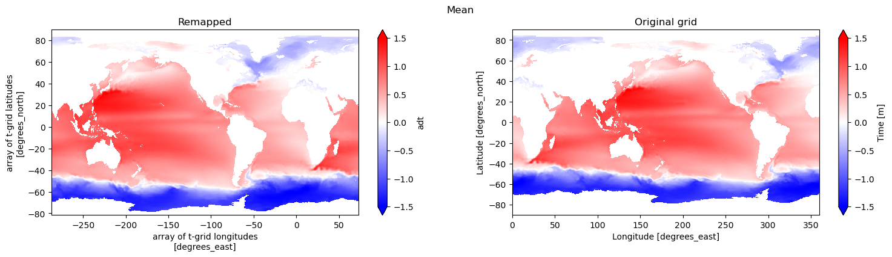
# Global attrs
adt.attrs['title'] = 'Absolute dynamic topography remapped to tx2_3'
adt.attrs['comment'] = 'Monthly Mean Absolute dynamic topography'
adt.attrs['references'] = 'http://www.aviso.altimetry.fr'
adt.attrs['author'] = 'Gustavo Marques (gmarques@ucar.edu)'
adt.attrs['date'] = today
adt.attrs['infile'] = infile
adt.attrs['url'] = 'https://github.com/NCAR/tx2_3/aviso'
# save
fname = 'aviso_adt_to_tx2_3v3_{}.nc'.format(today)
adt.to_netcdf(fname)